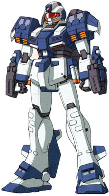

| RAG-79 Aqua GM Mass Production Amphibious Earth Federation Mobile Suit |
|
|  | |
General and Technical Data |
|
|
Model number: RAG-79 Code name: Aqua GM Unit type: mass production amphibious mobile suit Operator: Earth Federation Dimensions: overall height 18.0 meters; head height 15.0 meters Weight: empty 49.5 metric tons; max gross 64.3 metric tons Construction: titanium/ceramic composite Powerplant: Minovsky type ultracompact fusion reactor, output rated at 1280 kW Propulsion: hydrojet thrusters: 8950 kg total Performance: maximum acceleration 0.14 G; maximum water cruising speed 44 knots Equipment and design features: sensors, range 4800 meters Fixed armaments: 8 x torpedo launcher, mounted in shoulders; 2 x large torpedo; surface-to-air missile launcher, mounted on backpack; 4 x beam pick, stored in recharge racks on skirt armor, hand-carried in use; 6x Underwater use Grenade, mounted in legs Optional Hand Armaments: Underwater use 90mm GM Machinegun, 20 rounds per clip Magnetic Storage Racks: 1, on backpack |
|
| Technical and Historical Notes | |
|
Following the complete and utter failure of the GM Diver, Federal R&D staff set out to try and save at least some of their dignity with a mobile suit that could at least hold a candle to the murderous crab-like Zeon Marine Mobile Suits.
Following a great deal of wasted budget funds and numerous mobile suits being left on the bottom of the Amazon River, Federal engineers finally rolled out a suitable model: the RAG-79 Aqua GM. Unlike the earlier GM Diver, the Aqua GM focused on being in the water full-time; a premise not unlike the Zeon's MSM-03 Gogg. Rather than amphibious operations, the Aqua GM was constructed with the intention of being an anti-mobile suit unit. Its armament consists almost entirely of torpedo-type weapons; its sole equipment otherwise is a single surface-to-surface missile launcher, intended to bombard seashore bases once their MSMs had been dealt with, to remove the necessity of going ashore. Its primary weapon are two sets of quadruple torpedo launchers, mounted in the mobile suit's shoulders. Intended chiefly to down other marine mobile suits, they don't carry much payload but are slightly faster in the water than some Zeon models. For attacking heavier targets, two large torpedoes are provided on the mobile suits forearms. Finally, for close-range combat, four miniature beam sabers (their blades are styled in the shape of a pick) are mounted at the mobile suit's skirt armor for quick access. In addition, the GM Divers old underwater use machinegun and grenades are armable, for use in massed operations and in case of an aquatic landing. However, these are intended to not be necessary. In actual combat the GM Aqua turned out to be an amazing success, boasting more speed, maneuverability and firepower than the Duchy's MSM-03 Gogg underwater. Its amphibious capabilities are next to nothing, but it didn't need to go ashore thanks to its ability to assist Ground Based operations via the missile launcher. It also corrects the Gogg, Acquy and Z'Goks major flaw - though they can only move underwater vertically, they have to fire horizontally, forcing them to stop moving in order to fire (the Hygogg and Z'Gok E later corrected this problem.) The GM Aqua can fire all of its armament while moving straight at its target.
The only thing it cannot compete with the Gogg on the same level of, unfortunately, is armor, still having the simple armor of the GM frame.
|
 RPG quick stats sheet
RPG quick stats sheet | Weapons and Features | |


|
|